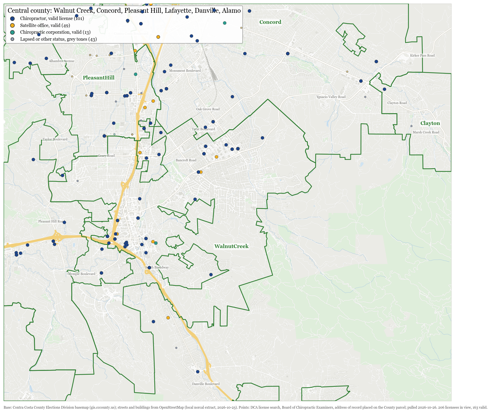
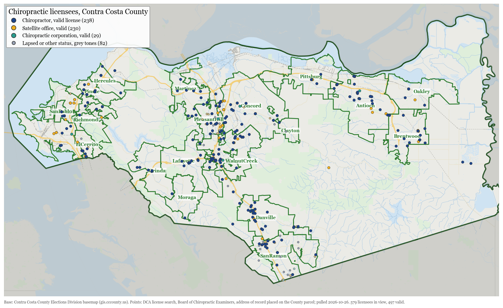
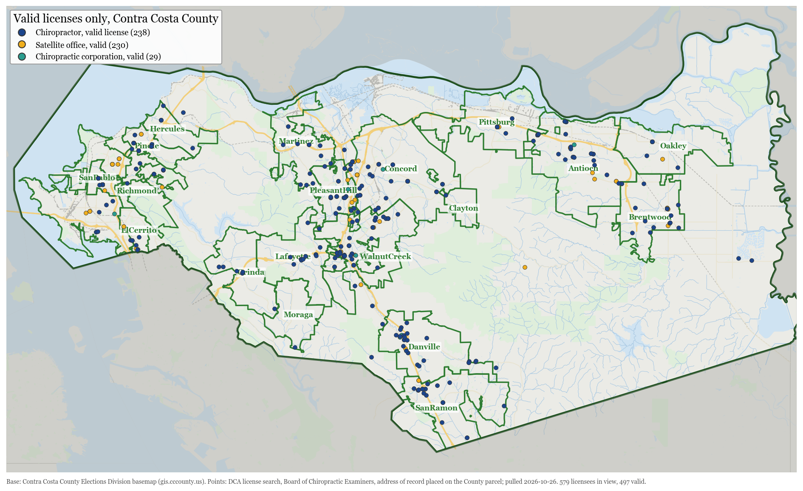
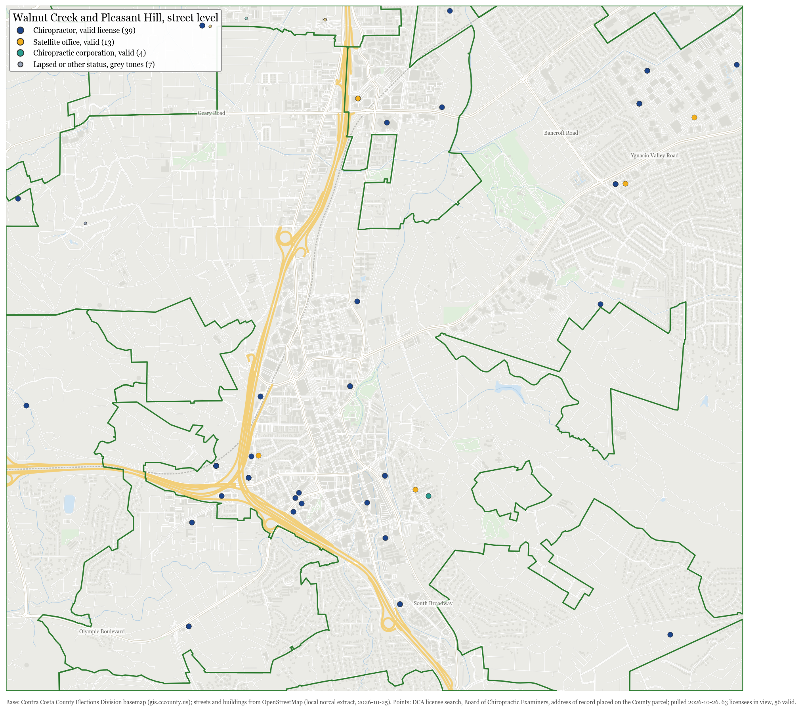

Download these tables as an Excel workbook (5 tables, 300 rows, 30 KB)
Contra Costa County chiropractors and health practitioners from public records: the Board of Chiropractic Examiners license roster (DCA), County and city permits, and the County Assessor parcel layer, with maps.
Open the interactive map (search a name, filter by city, parcel type and status, click any point).




Each list has its own page with a table you can sort and filter, its own map (click a row to find it, click a point to find its row) and a CSV download. Home addresses never show a street and are not mapped.
Open the interactive table and map
| What | Count |
|---|---|
| Every Board of Chiropractic Examiners record with a Contra Costa address | 1840 |
| Valid licenses, satellite offices and corporations | 651 |
| Valid chiropractor licenses | 347 |
| Valid satellite offices (additional practice locations) | 271 |
| Chiropractic corporations, all statuses | 116 |
| Records on parcels the County Assessor classes Medical, Dental (34) | 110 |
| Records on Office Buildings parcels (33) | 300 |
Source: California Department of Consumer Affairs license search (search.dca.ca.gov), Board of Chiropractic Examiners, county Contra Costa; addresses placed on the Contra Costa County Assessor parcel layer.
Open the interactive table and map
Valid licenses only. Main license = the chiropractor's address of record; satellite = an additional practice location the chiropractor registered with the Board.
| Chiropractors | Building | City | Main license here | Satellite certificates here | Corporations here | Parcel land use |
|---|---|---|---|---|---|---|
| 30 | 13830 SAN PABLO AVE | San Pablo | MOSES, KERRY A | ARORA, GAGANDEEP SINGH; BIEGEL, STEVEN BRUCE; CHAU, RICHARD; CONTRERAS, GERARDO DUENAS; COX, ANGELA; DHESI, SARBJIT SINGH; DUCKETT, STACEY ANN; FIELDS BREWER, ASHA; FORD, PAMELA VICTORIA; GRAVES, SAMUEL MONROE IV; ISERO, ERIC GEORGE; KERENYI, VICTOR CHRISTIAN P; KLAWITTER, DARRYL LEE; KNOTT, MICHAEL DAVID; KRIVITSKY, VALENTIN; MC CONNELL, MEGAN; ROBINSON, DANA MARIE; ROSENSTEIN, MATTHEW F; RUSHING, DEAN HOLDEN; SHEPPARD, LA MAR ANTHONY; SPICER, MARGARET; STEEN, KENNETH; STONE, ROBERT L III; SWANSON, SCOTT ROLAND; SWIRYN, ROBERT; TANG, EDWARD; TUFT, ALEXANDER MICHAEL; UEDA, ALFRED AKIRA; ZINGARO, MARIAN | 31 Commercial Stores (not supermarkets) | |
| 28 | 3700 DELTA FAIR BLVD | Antioch | BELUSA, ERIC ROBERT; HATCH, DENNIS MATTHEW | ATAZAI, ZAID; BEDELL, TODD R; BIEGEL, STEVEN BRUCE; BORON-TROTTER, REBEKAH; CAMACHO, KEVIN VALDEMORO; CASON, RYAN GLENN; CHAO, PHILIP TZER-HWA; DANESHVAR, NOGOL; EMAMPOUR, RABEAH SHAKHS; HERNANDEZ, JOSE ANGEL; HINDOCHA, ROMMEL; HOWARD, DOUGLAS ANDREW; KESSLER, ROBERT; KLAWITTER, DARRYL LEE; KNOTT, MICHAEL DAVID; MELEAN, IVAN DAVID; MICHAEL, DIANE V; MIRY, SAYED NAWEED; NAFEI, NEDA; SCHICK, KIRSTEN AAEN; SCHICK, ROBERT MORRIS; SHEPPARD, LA MAR ANTHONY; SWIRYN, ROBERT; TALAN, STACI JEAN; VASEY, JEFFREY MICHAEL; VILLALOBOS-TELLO, NAHOMY | 33 Office Buildings | |
| 19 | 2525 RAILROAD AVE | Pittsburg | NISSEN, BRANDON LEE; ORANJE, GERALD ENGELBRECHT | AMBROSE, JOSEPH R; CAMACHO, KEVIN VALDEMORO; CASON, RYAN GLENN; COX, ERIN MICHELLE; DANG, ANHKHOA; HAUBER, KENTON; JENKINS-DIXON, AMANDA DAWN; KERENYI, VICTOR CHRISTIAN P; KESSLER, ROBERT; KRIVITSKY, VALENTIN; MELEAN, IVAN DAVID; MICHAEL, DIANE V; MILLER, JIMMIE BRETT; NASIIRO, MUNABA; SCHICK, KIRSTEN AAEN; SCHICK, ROBERT MORRIS; SCRIVEN, HUNTER | ORANJE CHIROPRACTIC INC | 34 Medical, Dental |
| 12 | 2574 APPIAN WAY | Pinole | ARCHER, CONNOR LEON | BIEGEL, STEVEN BRUCE; CASON, RYAN GLENN; CHENG, FREDRICK SIU-HIN; COX, ANGELA; FRANCESCHI, ALEJANDRO ERIC; HINDOCHA, ROMMEL; MAGTOTO, MYLO H; PAYAN, ANTHONY MICHAEL; ROSENSTEIN, MATTHEW F; SPICER, MARGARET CATHERINE; SUBOTNICK, STEVEN I | 33 Office Buildings | |
| 11 | 501 W 3RD ST | Antioch | FRIGARD, TODD MICHAEL | ALEXANDER, MATTHEW; BIEGEL, STEVEN BRUCE; EMAMPOUR, RABEAH SHAKHS; HERNANDEZ, JOSE ANGEL; HERRERA, CHRISTOPHER ANDREW; JAVANMARDI, NIKOO; KESSLER, ROBERT; MCBRIDE, PAUL LAWAYNE; SWANSON, SCOTT ROLAND; UEDA, ALFRED AKIRA | 33 Office Buildings | |
| 10 | 4425 TREAT BLVD | Concord | KLAWITTER, DARRYL LEE | BUTLER, ROBERT JOHN; CAMACHO, KEVIN VALDEMORO; DUCKETT, STACEY ANN; HERRERA, CHRISTOPHER ANDREW; JAVANMARDI, NIKOO; MAGTOTO, MYLO H; MELEAN, IVAN DAVID; SOSINE, DENNIS MARK; UEDA, ALFRED AKIRA | 42 Shopping Centers (with or without improvements) | |
| 10 | 2970 HILLTOP MALL RD | Richmond | DARYAIE, JALAL ARMAN; DICKMAN, ROBERT ALAN; GRUBINSKAS, JAMES MICHAEL; JENNINGS, EDWARD DEWEY; KASPUTIS, REBECCA; KOVACS-TATAR, HELGA; MCDUFF, PETER ALLEN; MILLER, JIMMIE BRETT; PATEL, NAEEM MOHAMED; ZARGHAMI, MOHAMMAD REZA | |||
| 8 | 1120 2ND ST | Brentwood | GUENETTE, RYAN JAMES | ANSELL, LESA GILLEZEAU; CAMACHO, KEVIN VALDEMORO; DEL ROSARIO, ALLAN RAE; GADDI, CERITA; GIESSMAN, MATTHEW ANTHONY; LANETT, JENNIFER SARA; MORROW, ALEXANDER ROBERT | 33 Office Buildings | |
| 8 | 1320 WILLOW PASS RD | Concord | DANIELS, JOHN WESLEY; GRIFFIN, ROBERT ANDREW; KUANG, SIMON YIN LUNG; MELEAN, IVAN DAVID; MICHAEL, DIANE V; SOSINE, DENNIS MARK; SUNDERMAN, LILLIAN SUE; SWIRYN, ROBERT | 33 Office Buildings | ||
| 8 | 500 ALFRED NOBEL DR | Hercules | KERENYI, VICTOR CHRISTIAN P | DHESI, SARBJIT SINGH; DUMOUCHEL, RALPH JOSEPH; GRAVES, SAMUEL MONROE IV; KAUR, PRABHJOT; KLAWITTER, DARRYL LEE; MAGTOTO, MYLO H; NAFEI, NEDA | 29 Condominiums and Cooperatives (Includes Commercial and Industrial Condominiums) | |
| 6 | (residence, street not shown) | Antioch | AGHAYAN, NASIM; CHAO, PHILIP TZER-HWA; SHAPIRO, ROBERT JOHN; TRAN, TERI THUY NGOC; YEN, DANIEL D; ZARGHAMI, MOHAMMAD REZA | 14 Single Family on other than single family land | ||
| 6 | 3478 MAIN ST | Oakley | MATTINGLY, KRISTIN BERATTA | ANSELL, LESA GILLEZEAU; CAMACHO, KEVIN VALDEMORO; LANETT, JENNIFER SARA; O'BRIEN, MARK ALLEN; ROSSELLE, AARON TAYLOR | OAKLEY CHIROPRACTIC KRISTIN MATTINGLY D.C. CORP. | 33 Office Buildings |
| 6 | 2782 PINOLE VALLEY RD | Pinole | GUZMAN HERNANDEZ, HECTOR; LIMON, JOSE MANUEL; TESDALL, ARTHUR ALBERT | BIRKELAND, KRISTOPHER MICHAEL; LEPP, DAVID JASON; RUIZ, DIANA | 31 Commercial Stores (not supermarkets) | |
| 5 | 2015 DIAMOND BLVD | Concord | HUANG, DENNY; SANTELISES, VICTORIA ONCENA | FENTON, MARK AARON; MIGUEL, DARREN ANGELO; SAMSON, MARK CASTILLO | 42 Shopping Centers (with or without improvements) | |
| 5 | 413 RAILROAD AVE | Danville | KAUFMAN, MALENA BRITT | FIGUEIRA, JOSHUA; GHOURY, MOHAMMAD MUEEN; GUINTO, GLEN ANTHONY; HWANG, JUN-WOO | KAUFMAN CHIROPRACTIC CORPORATION | 33 Office Buildings |
| 5 | 1270 SPRINGBROOK RD | Walnut Creek | BOTSFORD, JERRY M; CALLAWAY, LAWRENCE RICHARD; GUTIERREZ, RUDOLPH ANDREW JR; HENDRICKS, LYNETTE RENE'; HUBBARD, BRADLEY ORRIN | CHIRON CALLAWAY CHIROPRACTIC PC | 33 Office Buildings | |
| 4 | 5421 LONE TREE WAY | Brentwood | ANAYA, JESSICA | FENTON, MARK AARON; MIGUEL, DARREN ANGELO; PENA, DANIEL ADRIAN | 42 Shopping Centers (with or without improvements) | |
| 4 | 1251 MONUMENT BLVD | Concord | BARTON, DAVID; BARTON, JACOB JAMES | MINKSTEIN, JOSEPH EDWARD JR; WARREN, SCOTT TYLER | 33 Office Buildings | |
| 4 | 140 MAYHEW WAY | Pleasant Hill | SCHICK, KIRSTEN AAEN; SCHICK, ROBERT MORRIS; TALAN, STACI JEAN | SUBOTNICK, STEVEN I | 33 Office Buildings | |
| 4 | 14341 SAN PABLO AVE | San Pablo | DOKHANCHIFAR, POOPAK; GOLCHEHREH, ARMAAN M A | CHENG, FREDRICK SIU-HIN; DOKHANCHIFAR, POOPAK; GOLCHEHREH, MEHRAN | GOLCHEHREH AND DOKHANCHIFAR CHIROPRACTIC CORPORATION; POOPAK DOKHANCHIFAR BONE AND JOINT CHIROPRACTIC INC | 31 Commercial Stores (not supermarkets) |
| 4 | 1511 TREAT BLVD | Walnut Creek | BOND, MCKENNA; BORON-TROTTER, REBEKAH SABETH; CABRERA, KATHLEEN ANN MARCIANO; NOORIVAZIRI, MARYAM | |||
| 4 | 1900 OLYMPIC BLVD | Walnut Creek | DUDUM, JAMES RAYMOND; SCHONBERGER, HOLLY DIANE; TONG, BRANDAN JASON | CALLAWAY, LAWRENCE RICHARD | ||
| 3 | 215 G ST | Antioch | ROBERTS, BRANDON LOUIS | ANDRADE CRUZ, GLORIA; STEWART, CEDRIC RENARDO | 31 Commercial Stores (not supermarkets) | |
| 3 | 3381 DEER VALLEY RD | Antioch | HARRIS, RICK RYAN | LUEDERS, SETH B; MILLER, JIMMIE BRETT | 42 Shopping Centers (with or without improvements) | |
| 3 | 4530 BALFOUR RD | Brentwood | CAMACHO, KEVIN VALDEMORO | AZIZI, KHALED A; CAKE, CHRIS M | 42 Shopping Centers (with or without improvements) | |
| 3 | 1070 CONCORD AVE | Concord | ANDRADE-CRUZ, GLORIA ZAPIEN | AGHAYAN, NASIM; YEN, DANIEL D | ||
| 3 | 1170 CONCORD AVE | Concord | MARTIN, CURTIS MICHAEL; ROMANO, AMBER LEE; SIINO, JEFFREY MARK | |||
| 3 | 2801 CONCORD BLVD | Concord | MORROW, ALEXANDER ROBERT | HUANG, DENNY; MCDUFF, PETER ALLEN | 33 Office Buildings | |
| 3 | 2975 TREAT BLVD | Concord | CHEW, THOMAS C; PEDRETTI, CHRISTOPHER WILLIAM; RUNCO, PHILLIP | CHEW, THOMAS C | 33 Office Buildings | |
| 3 | 5354 CLAYTON RD | Concord | MEYER, HARRIS | MCDUFF, PETER ALLEN; SOSINE, DENNIS MARK | 31 Commercial Stores (not supermarkets) | |
| 3 | 318 DIABLO RD | Danville | DUNCAN, MADELINE REID; FULLER, SHANDA M; HALL, KELLY | HALL FAMILY CHIROPRACTIC, INC. | 33 Office Buildings | |
| 3 | 11430 SAN PABLO AVE | El Cerrito | FENTON, MARK AARON; PENA, DANIEL ADRIAN; RUSSELL, ROSE DELAINE | 31 Commercial Stores (not supermarkets) | ||
| 3 | 1043 STUART ST | Lafayette | BEHYMER, MICHAEL JAMES; STEEL, JACQUALINE MARIE; STEEL, JEREMY ALEXANDER | 33 Office Buildings | ||
| 3 | 1310 TARA HILLS DR | Pinole | DIZON, MANUEL MANALAD | DOMENICONI, HENRY JAMES; TARONGOY, MICHAEL S | 29 Condominiums and Cooperatives (Includes Commercial and Industrial Condominiums) | |
| 3 | 140 GREGORY LN | Pleasant Hill | MCDUFF, PETER ALLEN; NGUYEN, TAM; TRAN, JENNIFER | 33 Office Buildings | ||
| 3 | 1924 OAK PARK BLVD | Pleasant Hill | ERDMANN, JOHN PATRICK; HALLMARK, RYAN JAMES | CORWIN, MITCHELL R | 33 Office Buildings | |
| 3 | 401 GREGORY LN | Pleasant Hill | CAPONIO, JOHN SAMUEL | KAMERZELL, RAYNA ESTELLE; MENDEZ, LACEY | CAPONIO CHIROPRACTIC INC. | 34 Medical, Dental |
| 3 | 620 CONTRA COSTA BLVD | Pleasant Hill | BRITT, DENISE MARIE; LUJAN, GABRIEL RAYMOND | NASSIRI, MASSOUD | 33 Office Buildings | |
| 3 | 3220 BLUME DR | Richmond | MELEAN, IVAN DAVID; MICHAEL, DIANE V; TALAN, STACI JEAN | 33 Office Buildings | ||
| 3 | 2410 SAN RAMON VALLEY BLVD | San Ramon | AHDUT, RENA AVITAL; WESTOVER, ERIC SCOTT | ALEXANDER, MATTHEW KURT | ||
| 3 | 2819 CROW CANYON RD | San Ramon | ADAMS, CYNTHIA; RICHARDSON, BRAD MATHEW | MOUROUX, BRADLEY GENE | 33 Office Buildings | |
| 3 | 3160 CROW CANYON RD | San Ramon | HARTSTEIN, CRAIG STEVEN; WATERMAN, BRENT JOSEPH; ZAMORA, RAFAEL JESUS | WATERMAN CHIROPRACTIC CENTER, INC. | ||
| 3 | 1229 OAKLAND BLVD | Walnut Creek | STOJANOVICH, NICKOLA SASHA | COX, DAVID E; WILLAT, DAVID F | 33 Office Buildings | |
| 3 | 1280 CIVIC DR | Walnut Creek | GRANADO, ZYLNA M; MINTON, TREVOR KA'EO | ROBINSON, JEFFREY PAUL | 33 Office Buildings | |
| 3 | 2021 YGNACIO VALLEY RD | Walnut Creek | CRESCI, ANTHONY DOMENIC; ROSENSTEIN, BENJAMIN SAMUEL | COX, ERIN MICHELLE | 34 Medical, Dental | |
| 3 | 3011 CITRUS CIR | Walnut Creek | GESSERT, BRANDON NICHOLAS; HAAKE, CURTIS JOHN | HERTING, DOUGLAS S | GESSERT CHIROPRACTIC INC | 33 Office Buildings |
| 3 | 355 LENNON LN | Walnut Creek | MATOCK, CHRISTOPHER JASON; PERRY, CLIFTON SERGIO | BANKS JR, LAMONT NOMORE | 34 Medical, Dental | |
| 2 | 3432 HILLCREST AVE | Antioch | DUCKETT, STACEY ANN | CAMACHO, KEVIN VALDEMORO | STACEY DUCKETT CHIROPRACTIC CORPORATION | 29 Condominiums and Cooperatives (Includes Commercial and Industrial Condominiums) |
| 2 | 3638 DELTA FAIR BLVD | Antioch | SILVA, VINCENT ALLEN; SOARES, MARTIN ANTHONY | 31 Commercial Stores (not supermarkets) | ||
| 2 | 5179 LONE TREE WAY | Antioch | KUANG, SIMON YIN LUNG; TRUJILLO, DAVID JOSEPH | 29 Condominiums and Cooperatives (Includes Commercial and Industrial Condominiums) | ||
| 2 | 4550 BALFOUR RD | Brentwood | DAYRIT, BENJAMIN TORRES | MARTIN, CURTIS MICHAEL | 42 Shopping Centers (with or without improvements) | |
| 2 | 1200 CONCORD AVE | Concord | CAKE, CHRIS M; CHRYSTAL, JOSHUA DAVID | 33 Office Buildings | ||
| 2 | 1290 MONUMENT BLVD | Concord | OLSON, HEIDI ELLE | KAMERZELL, RAYNA ESTELLE | HEIDI E. OLSON PROFESSIONAL CHIROPRACTIC CORPORATION | 33 Office Buildings |
| 2 | 2190 MERIDIAN PARK BLVD | Concord | ADAMS, JONATHAN DAVID | DE GARMO, BRIAN CHARLES | 49 Auto Agencies | |
| 2 | 3556 CONCORD BLVD | Concord | KLINGSTEDT, JENNIFER S; WESDORF, JANET LOUISE | 34 Medical, Dental | ||
| 2 | 4425 B TREAT BLVD | Concord | DHESI, SARBJIT SINGH; GOLCHEHREH, MEHRAN | |||
| 2 | 400 EL CERRO BLVD | Danville | HOOKER, JONATHAN CHARLES; NHU, LISA DINH | 34 Medical, Dental | ||
| 2 | 401 SYCAMORE VALLEY RD | Danville | CALL, JESSE ELLIS | MOUROUX, BRADLEY GENE | ||
| 2 | 801 SAN RAMON VALLEY BLVD | Danville | KHODABAKHSH, MAHSA | ABERCROMBIE, STEVE | 33 Office Buildings | |
| 2 | 2489 DISCOVERY BAY BLVD | Discovery Bay | PIERCE JR, RICHARD WAYNE; STEEN, RYAN RUSSELL | 31 Commercial Stores (not supermarkets) | ||
| 2 | 10468 SAN PABLO AVE | El Cerrito | NIZER, CHRISTOPHER LINN | WIGGINS, MARY | 33 Office Buildings | |
| 2 | (residence, street not shown) | El Sobrante | BALL, CAROL LEE; BALL, JOSEPH R | 11 Single Family, 1 residence on 1 site, with or without | ||
| 2 | 4726 APPIAN WAY | El Sobrante | RIXEN, DANIEL JAMES | MINTON, TREVOR KA'EO | 33 Office Buildings | |
| 2 | 3249 MT DIABLO CT | Lafayette | CHANCE, ROBERT PATRICK; JACKSON, GILBERT JOSEPH | 33 Office Buildings | ||
| 2 | 3466 MT DIABLO BLVD | Lafayette | FORD, KAREN YVONNE; JAKOBSEN, STEVEN DONALD | 31 Commercial Stores (not supermarkets) | ||
| 2 | 3467 GOLDEN GATE WAY | Lafayette | GONZALEZ, LESLIE; KASPUTIS, REBECCA | DR. GONZALEZ CHIROPRACTIC, PC | 33 Office Buildings | |
| 2 | (residence, street not shown) | Martinez | BOOHER-FULTON, JANETTE LEE; FULTON, MICHAEL ANTHONY | 19 Single Family detached with major common area such as pool, tennis, clubhouse, or other amenities, Cluster Homes | ||
| 2 | PO BOX | Oakley | COTA, CHRISTOPHER THOMAS; JUNNILA, RICKY DAVID | |||
| 2 | 50 VASHELL WAY | Orinda | MITCHNICK, TANYA; WALTON, PAUL DWIGHT | 33 Office Buildings | ||
| 2 | 1700 SAN PABLO AVE | Pinole | AMEZQUITA, RUBEN; MCBRIDE, PAUL LAWAYNE | 34 Medical, Dental | ||
| 2 | 101 GREGORY LN | Pleasant Hill | CORDES, CALVIN REID | PHAM, HIEN TRUNG | 29 Condominiums and Cooperatives (Includes Commercial and Industrial Condominiums) | |
| 2 | 380 CIVIC DR | Pleasant Hill | STRAND, CASEY LEE | SOSINE, DENNIS MARK | 33 Office Buildings | |
| 2 | 670 GREGORY LN | Pleasant Hill | DIETRICK, JAMES ALLEN; GONZALEZ, EDUARDO A | DIETRICK CHIROPRACTIC INC | 29 Condominiums and Cooperatives (Includes Commercial and Industrial Condominiums) | |
| 2 | 1503 MACDONALD AVE | Richmond | ADEJUNMOBI, THAO; OWEN, JONICE MAE | 31 Commercial Stores (not supermarkets) | ||
| 2 | 3223 BLUME DR 1ST | Richmond | MELEAN, IVAN DAVID; MICHAEL, DIANE V | |||
| 2 | 2110 OMEGA RD | San Ramon | MARTINS, RAQUELLE MARIE CARDOS; MERRITT, SARAH ANGELA | 33 Office Buildings | ||
| 2 | 2570 SAN RAMON VALLEY BLVD | San Ramon | DEES, ROBERT C; LAUX, AARON JAMES | 55 Mini-Warehouse (public storage) | ||
| 2 | 2821 CROW CANYON RD | San Ramon | KIM, JIWON; TERRANOVA, FRANK ANTHONY JR | MARSHALL T. LEE CHIROPRACTIC, INC. | ||
| 2 | 9260 ALCOSTA BLVD | San Ramon | CRICK, ALAN CHRISTOPHER | ROSHANKAR, MINA | 85 Public and Private Parking | |
| 2 | PO BOX | San Ramon | DHESI, PAUL SINGH; DHESI, SARBJIT SINGH | |||
| 2 | 1280 BLVD WAY | Walnut Creek | LERNER-RAMIREZ, BARBARA; MODENBACH, WILLIAM KEITH | 33 Office Buildings | ||
| 2 | 1431 OAKLAND BLVD | Walnut Creek | SKARDA, STEPHEN T | KEM, CHANTHA | ||
| 2 | 190 N WIGET LN | Walnut Creek | BORON-TROTTER, REBEKAH; VILLALOBOS-TELLO, NAHOMY | |||
| 2 | 39 QUAIL CT | Walnut Creek | BARTLETT, ADAM ELON; ELKIND, LAUREN ALISA | 48 Multiple and Commercial; miscellaneously improved | ||
| 2 | 710 S BROADWAY | Walnut Creek | BAKER, NICK JAMES; GESSERT, RACHEL K.N. | 33 Office Buildings |
Open the interactive table and map
Address of record (DCA) on a parcel the County Assessor codes as residential. A home address of record is allowed (16 CCR 303: it is a mailing address), so this does not mean the chiropractor treats patients there. Streets are not shown.
| Name | License type | Status | City | Parcel land use |
|---|---|---|---|---|
| ABREU, JEFFREY CHRISTOPHER | Chiropractor | Valid | Danville | 19 Single Family detached with major common area such as pool, tennis, clubhouse, or other amenities, Cluster Homes |
| ACEVEDO, JOSE A | Chiropractor | Valid | Pinole | 11 Single Family, 1 residence on 1 site, with or without |
| ALEJANDRO, IRENE SARAH | Chiropractor | Valid | San Ramon | 11 Single Family, 1 residence on 1 site, with or without |
| ARMSTRONG, JAMES EDWARD | Chiropractor | Valid | Danville | 19 Single Family detached with major common area such as pool, tennis, clubhouse, or other amenities, Cluster Homes |
| ARRAS, VIOLET | Chiropractor | Valid | Pleasant Hill | 11 Single Family, 1 residence on 1 site, with or without |
| AVAKIAN, JARED ANTRANIG | Chiropractor | Valid | Walnut Creek | 29 Condominiums and Cooperatives (Includes Commercial and Industrial Condominiums) |
| BAJWA, NAVJOT KAUR | Chiropractor | Valid | Rodeo | 19 Single Family detached with major common area such as pool, tennis, clubhouse, or other amenities, Cluster Homes |
| BALL, CAROL LEE | Chiropractor | Valid | El Sobrante | 11 Single Family, 1 residence on 1 site, with or without |
| BALL, JOSEPH R | Chiropractor | Valid | El Sobrante | 11 Single Family, 1 residence on 1 site, with or without |
| BEHYMER, JERILEE | Chiropractor | Valid | Alamo | 11 Single Family, 1 residence on 1 site, with or without |
| BIVOLCIC, DELENE | Chiropractor | Valid | El Sobrante | 16 Townhouses, Attached PUDs, Duets |
| BOOHER-FULTON, JANETTE LEE | Chiropractor | Valid | Martinez | 19 Single Family detached with major common area such as pool, tennis, clubhouse, or other amenities, Cluster Homes |
| BROWN, CHRISTOPHER | Chiropractor | Valid | Pleasant Hill | 11 Single Family, 1 residence on 1 site, with or without |
| CHOW, RUSSELL A. | Chiropractor | Valid | San Ramon | 11 Single Family, 1 residence on 1 site, with or without |
| CLEMENT, BLAIR BIANCA | Chiropractor | Valid | Hercules | 19 Single Family detached with major common area such as pool, tennis, clubhouse, or other amenities, Cluster Homes |
| CORBIN, SCOTT R | Chiropractor | Valid | Hercules | 29 Condominiums and Cooperatives (Includes Commercial and Industrial Condominiums) |
| COUTURE, LOREN | Chiropractor | Valid | Danville | 13 Single Family, 2 or more residences on 1 or more site |
| CRAWFORD, RONALD G | Chiropractor | Valid | Concord | 11 Single Family, 1 residence on 1 site, with or without |
| CREGGETT, SARENA DEANE | Chiropractor | Valid | Antioch | 11 Single Family, 1 residence on 1 site, with or without |
| CUSACK, GREGORY JOHN | Chiropractor | Valid | Walnut Creek | 19 Single Family detached with major common area such as pool, tennis, clubhouse, or other amenities, Cluster Homes |
| DE GARMO, BRIAN CHARLES | Chiropractor | Valid | Martinez | 11 Single Family, 1 residence on 1 site, with or without |
| DEABUENO, JOREEN GRIEGO | Chiropractor | Valid | El Cerrito | 14 Single Family on other than single family land |
| DEUBEL, RYAN SCOTT | Chiropractor | Valid | Concord | 11 Single Family, 1 residence on 1 site, with or without |
| DONALDSON, SCOTT FOSTER | Chiropractor | Valid | Antioch | 11 Single Family, 1 residence on 1 site, with or without |
| DULBERG, MARK RICHARD | Chiropractor | Valid | Richmond | 14 Single Family on other than single family land |
| DUMOUCHEL, RALPH JOSEPH | Chiropractor | Valid | Concord | 11 Single Family, 1 residence on 1 site, with or without |
| EHLERS, MARLENE INGRID | Chiropractor | Valid | Orinda | 11 Single Family, 1 residence on 1 site, with or without |
| EIDSON, KATHERINE MARY | Chiropractor | Valid | Brentwood | 19 Single Family detached with major common area such as pool, tennis, clubhouse, or other amenities, Cluster Homes |
| ENCARNACION-STRAND, ALEXANDER LEE | Chiropractor | Valid | Oakley | 11 Single Family, 1 residence on 1 site, with or without |
| FAULKNER, DELLA LOUISE | Chiropractor | Valid | Martinez | 11 Single Family, 1 residence on 1 site, with or without |
| FEIN, BRANDON | Chiropractor | Valid | Lafayette | 21 Duplex |
| FEUER, DANNY BEN | Chiropractor | Valid | Danville | 19 Single Family detached with major common area such as pool, tennis, clubhouse, or other amenities, Cluster Homes |
| FRANKENBERGER, SETH GAVIN | Chiropractor | Valid | San Ramon | 61 Rural, residential improved, 1 acre up to 10 acres |
| FREDERICK, VIRGINIA ANN | Chiropractor | Valid | El Sobrante | 11 Single Family, 1 residence on 1 site, with or without |
| FULTON, MICHAEL ANTHONY | Chiropractor | Valid | Martinez | 19 Single Family detached with major common area such as pool, tennis, clubhouse, or other amenities, Cluster Homes |
| GHOURY, MOHAMMAD MUEEN | Chiropractor | Valid | El Cerrito | 13 Single Family, 2 or more residences on 1 or more site |
| GOMEZ, ANGEL JESUS | Chiropractor | Valid | Pittsburg | 14 Single Family on other than single family land |
| HAMILTON, ROBERT | Chiropractor | Valid | Concord | 11 Single Family, 1 residence on 1 site, with or without |
| HARRISON, SHELBY NICOLE | Chiropractor | Valid | Antioch | 11 Single Family, 1 residence on 1 site, with or without |
| HOLIDAY, MARGARET LYNN | Chiropractor | Valid | Richmond | 11 Single Family, 1 residence on 1 site, with or without |
| HOLMES, BRANDON MICHAEL | Chiropractor | Valid | Walnut Creek | 11 Single Family, 1 residence on 1 site, with or without |
| HOMBERG, WALTER ATOM | Chiropractor | Valid | Martinez | 11 Single Family, 1 residence on 1 site, with or without |
| HOWE, PERRY | Chiropractor | Valid | Danville | 19 Single Family detached with major common area such as pool, tennis, clubhouse, or other amenities, Cluster Homes |
| JACKSON, DARRYL IRVING | Chiropractor | Valid | Richmond | 14 Single Family on other than single family land |
| JAVIDI, TERRY | Chiropractor | Valid | San Ramon | 29 Condominiums and Cooperatives (Includes Commercial and Industrial Condominiums) |
| KALEAL, EMILY LORENE | Chiropractor | Valid | Concord | 28 Apartments, 60 units or more |
| KEARNS, ANTHONY WAYNE | Chiropractor | Valid | Clayton | 11 Single Family, 1 residence on 1 site, with or without |
| KIEU, HUGH VAN | Chiropractor | Valid | Concord | 11 Single Family, 1 residence on 1 site, with or without |
| KONLON, LANCE R | Chiropractor | Valid | Pacheco | 88 Manufactured Home, MH accessories, Floating Homes |
| KOO, ARNOLD ZHAO | Chiropractor | Valid | San Ramon | 29 Condominiums and Cooperatives (Includes Commercial and Industrial Condominiums) |
| LANG, SAMANTHA | Chiropractor | Valid | Danville | 19 Single Family detached with major common area such as pool, tennis, clubhouse, or other amenities, Cluster Homes |
| LEE, DELWYN KAI JIE | Chiropractor | Valid | Danville | 16 Townhouses, Attached PUDs, Duets |
| LEE, MARSHALL THOMAS | Chiropractor | Valid | San Ramon | 11 Single Family, 1 residence on 1 site, with or without |
| LOKE, CAMILA | Chiropractor | Valid | Orinda | 11 Single Family, 1 residence on 1 site, with or without |
| MAHALLATI, NIMA SHARIF | Chiropractor | Valid | Lafayette | 11 Single Family, 1 residence on 1 site, with or without |
| MARTIN, GENE | Chiropractor | Valid | Brentwood | 11 Single Family, 1 residence on 1 site, with or without |
| MARTINEZ, ALEXA CHILIAN | Chiropractor | Valid | Alamo | 11 Single Family, 1 residence on 1 site, with or without |
| MC CURTAIN, DANIEL ALLEN | Chiropractor | Valid | Pittsburg | 88 Manufactured Home, MH accessories, Floating Homes |
| MCDANIEL, CHRISTOPHER L | Chiropractor | Valid | Walnut Creek | 11 Single Family, 1 residence on 1 site, with or without |
| MILLER, JEFFREY SCOTT | Chiropractor | Valid | Lafayette | 11 Single Family, 1 residence on 1 site, with or without |
| MOORE, JASON DEWITT | Chiropractor | Valid | Danville | 25 Apartments, 5-12 units |
| MOSIER, JON MICHAEL | Chiropractor | Valid | Martinez | 16 Townhouses, Attached PUDs, Duets |
| NIRANKARI, PUNEET | Chiropractor | Valid | Antioch | 28 Apartments, 60 units or more |
| NOORISHAD, TINA | Chiropractor | Valid | Moraga | 11 Single Family, 1 residence on 1 site, with or without |
| NUNNINK, FRANCEL CARACOL | Chiropractor | Valid | Brentwood | 11 Single Family, 1 residence on 1 site, with or without |
| O'CONNOR, JASON RAY | Chiropractor | Valid | Antioch | 11 Single Family, 1 residence on 1 site, with or without |
| ORMAN, JULIE ANNE | Chiropractor | Valid | Richmond | 29 Condominiums and Cooperatives (Includes Commercial and Industrial Condominiums) |
| OWENS, LUCIA MARIE | Chiropractor | Valid | Lafayette | 25 Apartments, 5-12 units |
| PATANIA, RHINA ARLENE | Chiropractor | Valid | Concord | 11 Single Family, 1 residence on 1 site, with or without |
| PENA, DANIEL ADRIAN | Chiropractor | Valid | Antioch | 11 Single Family, 1 residence on 1 site, with or without |
| POTTHOFF, ELLEN CLAIRE | Chiropractor | Valid | Martinez | 11 Single Family, 1 residence on 1 site, with or without |
| PRESNICK, BRUCE DAVID | Chiropractor | Valid | Martinez | 11 Single Family, 1 residence on 1 site, with or without |
| RAMIREZ, SANTIAGO | Chiropractor | Valid | Oakley | 11 Single Family, 1 residence on 1 site, with or without |
| RETTNER, RAPHAEL | Chiropractor | Valid | Lafayette | 11 Single Family, 1 residence on 1 site, with or without |
| REYZELMAN, VICTORIA | Chiropractor | Valid | San Ramon | 19 Single Family detached with major common area such as pool, tennis, clubhouse, or other amenities, Cluster Homes |
| REZAEI, MAJID | Chiropractor | Valid | Walnut Creek | 11 Single Family, 1 residence on 1 site, with or without |
| RICCABONA, MARK VINCENT | Chiropractor | Valid | Martinez | 11 Single Family, 1 residence on 1 site, with or without |
| RODRIGUEZ, BIANQA YASMIN | Chiropractor | Valid | Antioch | 11 Single Family, 1 residence on 1 site, with or without |
| ROSEN, RUSSELL MILES | Chiropractor | Valid | Discovery Bay | 11 Single Family, 1 residence on 1 site, with or without |
| ROSS, DOUGLAS BURT | Chiropractor | Valid | Richmond | 11 Single Family, 1 residence on 1 site, with or without |
| RUBALCAVA, RUBEN | Chiropractor | Valid | San Pablo | 14 Single Family on other than single family land |
| SANTELLI, CYNTHIA ANN | Chiropractor | Valid | Richmond | 29 Condominiums and Cooperatives (Includes Commercial and Industrial Condominiums) |
| SCULL JR., JOSEPH | Chiropractor | Valid | Danville | 16 Townhouses, Attached PUDs, Duets |
| SEE, CHRISTOPHER GERARD | Chiropractor | Valid | Martinez | 11 Single Family, 1 residence on 1 site, with or without |
| SEMBRAT, MARK HENRY | Chiropractor | Valid | Danville | 19 Single Family detached with major common area such as pool, tennis, clubhouse, or other amenities, Cluster Homes |
| SHANTI, SANDEE LINN | Chiropractor | Valid | El Sobrante | 11 Single Family, 1 residence on 1 site, with or without |
| TURUNEN, BARBARA JEAN | Chiropractor | Valid | Richmond | 11 Single Family, 1 residence on 1 site, with or without |
| VARGAS, SHANNON HIDEKI | Chiropractor | Valid | Concord | 16 Townhouses, Attached PUDs, Duets |
| WILBUR, MARK WILLIAM | Chiropractor | Valid | Brentwood | 11 Single Family, 1 residence on 1 site, with or without |
| WITTKAMP-FILARDO, MONIKA | Chiropractor | Valid | Brentwood | 11 Single Family, 1 residence on 1 site, with or without |
| WRISTEN, WILLIAM VERNON | Chiropractor | Valid | Antioch | 14 Single Family on other than single family land |
| ZIEGLER, ROBERT | Chiropractor | Valid | Orinda | 11 Single Family, 1 residence on 1 site, with or without |
| ZYLKER, KENNETH JAN | Chiropractor | Valid | Martinez | 11 Single Family, 1 residence on 1 site, with or without |
| ALVARADO CHIROPRACTIC CORPORATION | Corporation | Valid | Antioch | 11 Single Family, 1 residence on 1 site, with or without |
| JULIE ORMAN CHIROPRACTIC CORP. | Corporation | Valid | Richmond | 29 Condominiums and Cooperatives (Includes Commercial and Industrial Condominiums) |
| RALPH DUMOUCHEL, D.C., | Corporation | Valid | Concord | 11 Single Family, 1 residence on 1 site, with or without |
| AGHAYAN, NASIM | Satellite | Valid | Antioch | 14 Single Family on other than single family land |
| CAMACHO, KEVIN VALDEMORO | Satellite | Valid | Oakley | 11 Single Family, 1 residence on 1 site, with or without |
| CHAO, PHILIP TZER-HWA | Satellite | Valid | Antioch | 14 Single Family on other than single family land |
| CHRYSTAL, JOSHUA DAVID | Satellite | Valid | Walnut Creek | 29 Condominiums and Cooperatives (Includes Commercial and Industrial Condominiums) |
| DOMENICONI, HENRY JAMES | Satellite | Valid | Pinole | 29 Condominiums and Cooperatives (Includes Commercial and Industrial Condominiums) |
| KEM, CHANTHA | Satellite | Valid | Walnut Creek | 13 Single Family, 2 or more residences on 1 or more site |
| KUANG, SIMON YIN LUNG | Satellite | Valid | Antioch | 29 Condominiums and Cooperatives (Includes Commercial and Industrial Condominiums) |
| SCATINA, MICHELLE C | Satellite | Valid | El Sobrante | 11 Single Family, 1 residence on 1 site, with or without |
| SHAPIRO, ROBERT JOHN | Satellite | Valid | Antioch | 14 Single Family on other than single family land |
| TRAN, TERI THUY NGOC | Satellite | Valid | Antioch | 14 Single Family on other than single family land |
| TRUJILLO, DAVID JOSEPH | Satellite | Valid | Antioch | 29 Condominiums and Cooperatives (Includes Commercial and Industrial Condominiums) |
| VITZ, ANDREA MARIE | Satellite | Valid | Clayton | 61 Rural, residential improved, 1 acre up to 10 acres |
| YEN, DANIEL D | Satellite | Valid | Antioch | 14 Single Family on other than single family land |
| ZARGHAMI, MOHAMMAD REZA | Satellite | Valid | Antioch | 14 Single Family on other than single family land |
| ZEREH, REEMA | Satellite | Valid | Alamo | 11 Single Family, 1 residence on 1 site, with or without |
Open the interactive table and map
| Parcel address | APN | Built | Sq ft | Chiropractors registered here |
|---|---|---|---|---|
| 2231 OLYMPIC BLVD , WALNUT CREEK | 184-312-034 | 1978 | 2550 | JOHNSON, JEFFREY SCOTT (chiropractor 24925); JOHNSON CHIROPRACTIC GROUP, INC. (corporation 2724) |
| 1500 OAK VIEW AVE , KENSINGTON | 571-332-013 | 1943 | 1380 | |
| 267 ARLINGTON AVE , KENSINGTON | 570-060-017 | 1956 | 1841 | |
| 4165 BLACKHAWK PLAZA CIR , DANVILLE | 203-780-005 | 1989 | 22000 | |
| 3980 SAN PABLO DAM RD , EL SOBRANTE | 420-192-046 | 0 | 10319 | |
| 1501 ST ALPHONSUS WAY , ALAMO | 191-080-051 | 1975 | 12876 | |
| 3150 DANVILLE BLVD , ALAMO | 192-071-036 | 1951 | 4681 | |
| 3634 SAN PABLO DAM RD , EL SOBRANTE | 420-140-002 | 1961 | 3118 | |
| 401 VALLEY VIEW RD , EL SOBRANTE | 425-251-011 | 1962 | 1895 | |
| 4100 SAN PABLO DAM RD , EL SOBRANTE | 420-191-021 | 1959 | 4950 | |
| 4300 SAN PABLO DAM RD , EL SOBRANTE | 435-021-004 | 1970 | 2943 | |
| 4440 SAN PABLO DAM RD , EL SOBRANTE | 435-031-030 | 1974 | 3462 | |
| 4450 SAN PABLO DAM RD , EL SOBRANTE | 435-031-006 | 1965 | 4410 | |
| 296 ARLINGTON AVE , KENSINGTON | 571-050-009 | 1940 | 2029 | |
| 101 ASPEN DR , PACHECO | 125-120-105 | 2018 | 3263 | |
| 218 CENTER AVE , PACHECO | 125-120-100 | 1870 | 1894 | |
| 5280 PACHECO BLVD , PACHECO | 125-220-018 | 1970 | 1500 | |
| 130 PARKER AVE , RODEO | 357-042-018 | 1944 | 2058 | |
| 301 RAILROAD AVE , RODEO | 357-163-016 | 1953 | 1184 | |
| 1181 BOULEVARD WAY , WALNUT CREEK | 185-370-004 | 1965 | 6400 | |
| 12 COTTAGE LN , WALNUT CREEK | 184-161-004 | 1928 | 2220 | |
| 1411 TREAT BLVD , WALNUT CREEK | 148-260-063 | 1980 | 3842 | |
| 1450 TREAT BLVD , WALNUT CREEK | 172-031-023 | 1983 | 148140 | |
| 1535 TREAT BLVD , WALNUT CREEK | 148-270-017 | 1952 | 1977 | |
| 2079 OLYMPIC BLVD , WALNUT CREEK | 184-302-033 | 1916 | 1637 | |
| 2211 OLYMPIC BLVD , WALNUT CREEK | 184-312-021 | 1942 | 3101001 | |
| 2225 OLYMPIC BLVD , WALNUT CREEK | 184-312-035 | 1985 | 5255 |
Open the interactive table and map
Building permits whose description names a chiropractic use (tenant improvements, signs, alterations), newest first, from the countywide permit file, with the County Assessor land use of the parcel.
| Submitted | Issued | Address | City | Description | Work | Property type | Status | Project value | Contractor or applicant | Parcel land use |
|---|---|---|---|---|---|---|---|---|---|---|
| 2025-07-08 | 2453 DISCOVERY BAY BLVD | DISCOVERY BAY | Planning/Property Use Verification/UV/NA The applicant is requesting a Property Use Verification to rent out a space within an existing chiropractor office for a massage business, "taunya moise". The proposed business meets the requirement per planning file CDLP00-02067. No signage approved with this permit. | Commercial | Active | |||||
| 2025-07-07 | 2453 DISCOVERY BAY BLVD | DISCOVERY BAY | Minor Application (Small Lot Review, Kensington Design Review, Home Occupation and Property Use Verification) massage therapy inside pierce chiropractic | Commercial | Final | |||||
| 2025-06-09 | 3118 CLAYTON RD CONCORD CA 94519 | CONCORD | Planning Permit Lew Chiropractic Corp AA Application to be able to run my private practice as a chiropractor renting a suite from business owner. I will be conducting chiropractic adjustments, physical, and neurological exams. | Commercial | project approved | |||||
| 2024-02-27 | 2300 STANWELL DR CONCORD CA 94520 | CONCORD | Planning Permit 2300 Stanwell Dr. Suite C Jovance Professional Studios operates a wellness center consisting of the following services: skin care, non-surgical skin and body treatments, massage therapy, and chiropractic treatment. We also have a wellness retail operation consisting of wellness health products, clothing, and healthy snack options. We provide our wellness professionals office space and private service studios. We have a high conviction to fight disease and help the community be more healthy. In our vision, we bring together businesses that focus on wellness and health, all under the same roof. The Retail/Health Bar will offer snacks and items that are made of all natural ingredients with no preservatives or artificial coloring. The Chiropractor, Esthetician and Massage therapy studios will offer solutions for maintaining a healthy lifestyle and body movement. We created an atmosphere that encourages and helps the community and anyone who comes by us, to invest in their health and improve their overall wellness. Our goal is to make a small contribution to a large problem that is impacting people all over the world. One-by-one we are grateful for helping another person realize the possibilities of a better life that is fulfilling and full of vitality. | Commercial | In Review | |||||
| 2024-02-26 | 2300 STANWELL DR CONCORD CA 94520 | CONCORD | Preliminary Application VOID: 2300 Stanwell Drive Suite C, Concord, CA 94520 Business License Application VOID: Applicant meant to apply for an Administrative Permit. Jovance Professional Studios, Inc. is applying for a business license to operate a wellness center for this lease space. We offer skin care, non-surgical skin and body treatments, massage therapy, and chiropractic treatment. We also have a wellness retail operation consisting or wellness health products, clothing, and healthy snack options. | Commercial | In Review | |||||
| 2021-06-17 | 2021-07-06 | 5421 LONE TREE WAY #120 | BRENTWOOD | T.I. - "The Joint Chiropractic" | Commercial | Final | Wci-Gc Inc | 42 Shopping Centers (with or without improvements) | ||
| 2021-03-23 | 2015 DIAMOND BL CONCORD CA 94520 | CONCORD | Sewer Connection 2015 Diamond Blvd Ste 145 TI for The Joint Chiropractic Center 0 existing fixtures, 2 post construction | Commercial | In Review | $130,000 | Concord Centercal Llc *; Thomas Bouffard Architects, Inc | |||
| 2021-03-09 | 1280 DIAMOND WY CONCORD CA 94520 | CONCORD | Planning Permit Administrative Permit for Medical Services Facility AA Chiropractic clinic treating musculoskeletal conditions with chiropractic, soft tissue modalities and physical therapy. | Commercial | project approved | |||||
| 2021-03-08 | 1280 DIAMOND WY CONCORD CA 94520 | CONCORD | Preliminary Application 1280 Diamond Way--VOID Chiropractic Clinic VOIDED record. See PL21031. Chiropractic clinic treating musculoskeletal conditions with chiropractic, soft tissue modalities and physical therapy. | Commercial | In Review | |||||
| 2021-03-02 | 2021-06-28 | 2015 DIAMOND BL, 145, CONCORD CA 94520 | CONCORD | Building Tenant Improvement for The Joint Chiropractic Center Interior only. New interior walls, doors, ceilings ,light fixtures, power outlets, new 3 ton HVAC unit, new ducts and registers, New accessible restroom, water closet, lavatory, insta hot water heater. New electrical panels. | Alteration New | Commercial | Final | $130,000 | ||
| 2021-02-10 | 1390 WILLOW PASS RD CONCORD CA 94520 | CONCORD | Planning Permit 1390 Willow Pass Rd, Concord, CA 94520 New Office Location Zoning application for a chiropractic office use. Applicant submitted on 2-10-21 Fees entered by Planner but not invoiced. Applicant called to inquire about application status on 2-18-21 Fees invoiced by LV on 2-18-21 and forwarded to FA | New | Commercial | Final | ||||
| 2020-12-07 | 2015 DIAMOND BL CONCORD CA 94520 | CONCORD | Planning Permit The Joint Chiropractic AA Admin. Permit for new chiropractic use at Veranda. Applicant to mail check for $651.24 Check processed 12-18-20 | Commercial | Final | |||||
| 2020-10-12 | 2020-10-26 | 5421 LONE TREE WAY #120 | BRENTWOOD | Install illum wall sign - The Joint Chiropractic | Commercial | Inactive | Evans Signs | 42 Shopping Centers (with or without improvements) | ||
| 2019-12-11 | 2020-02-05 | 2380 FAIRVIEW AVE | BRENTWOOD | Commerical T.I. - Iannaccone Chiropractic - 3588 sq. ft. | Commercial | Final | East Lme Group Llc | 31 Commercial Stores (not supermarkets) | ||
| 2019-08-12 | 2019-12-11 | 4425 TREAT BL, CONCORD CA 94521 | CONCORD | Building Treat Plaza New Signs replace (14) illuminated signs for the following tenant spaces: STORES B (SUITES A-G): (1) sign for Barefoot Nail Spa, (1) sign for Fitness Studio, (1) sign for Pasta Primavera Café, (1) sign for Merry Maids, (1) sign for Cosmo Prof, (1) sign for Growing Pains, (2) signs replaced for International Market & Grill, PAD B (SUITES R, S, & T) (2) signs replaced for each tenant space: Fast and Easy, UPS, Treat Plaza Dental and Performance Chiropractic Center | Alteration New | Commercial | Final | $56,000 | ||
| 2019-06-10 | 2019-06-10 | 413 RAILROAD AVE DANVILLE CA 94526 | DANVILLE | Sign Installation NONILLUMINATED SIGN - THE JOINT CHIROPRACTIC | Commercial | Final | $2,000 | Dennis Stanworth; Stanworth Sign | 42 Shopping Centers (with or without improvements) | |
| 2019-05-09 | 2019-05-21 | 413 RAILROAD AVE DANVILLE CA 94526 | DANVILLE | Commercial Tenant Improvement TI - THE JOINT CHIROPRACTIC | Alteration | Commercial | Final | $119,207 | Forest Services Inc | 42 Shopping Centers (with or without improvements) |
| 2018-10-19 | 2018-11-01 | 380 W COUNTRY CLUB DR C | BRENTWOOD | CE-Illuminated sign - Steen Chiropractic | Commercial | Final | West Coast Sign&Elect | 31 Commercial Stores (not supermarkets) | ||
| 2018-10-03 | 2018-10-09 | 2866 YGNACIO VALLEY RD, WALCR CA | WALNUT CREEK | Building New Construction, Additions, Alterations or Sign WALL SIGN: "THE JOINT CHIROPRACTIC" | Addition Alteration New | Commercial | Inactive | |||
| 2018-08-15 | 2018-10-03 | 2866 YGNACIO VALLEY RD, WALCR CA | WALNUT CREEK | Building New Construction, Additions, Alterations or Sign TI FOR THE JOINT CHIROPRACTIC CLINIC | Addition Alteration New | Commercial | Final | |||
| 2018-05-23 | 2018-05-23 | 2245 MORELLO AVE B PLEASANT HILL CA 94523-1850 | PLEASANT HILL | Building (Commercial) Tenant Improvement/Alteration, Remodel, Repair E-SIGN FOR NATURAL LIFE CHIROPRACTIC | Alteration New | Commercial | Inactive | $1,500 | 42 Shopping Centers (with or without improvements) | |
| 2018-05-08 | 2001 DIAMOND BL, CONCORD CA 94520 | CONCORD | Building Tenant improvement of 1129SF for a chiropractor office "The Joint Concord" at the Veranda Shopping Center SUITE 110 | Alteration New | Commercial | Inactive | $62,000 | |||
| 2018-05-08 | 2001 DIAMOND BL CONCORD CA 94520 | CONCORD | Sewer Connection 2001 Diamond Blvd TI for The Joint (chiropractor office) 0 existing fixtures, 2.2 post construction | Commercial | In Review | Concord Centercal Llc *; Quality Choice Construction | ||||
| 2017-04-13 | 1849 WILLOW PASS RD CONCORD CA 94520 | CONCORD | Temporary Banner Sign Temporary Banner New Health Chiropractic Temporary Banner From 4-15-17 to 5-15-17 | Commercial | Active | |||||
| 2016-09-09 | 2016-09-23 | 8425 BRENTWOOD BLVD B-1 | BRENTWOOD | Wood sign: Broussard Chiropractic | Commercial | Inactive | Tracy Sign Inc | 31 Commercial Stores (not supermarkets) | ||
| 2015-08-11 | 355 LENNON LN, WALNUT CREEK CA 94598 | WALNUT CREEK | Building New Construction, Additions, Alterations or Sign T.I. FOR CHIROPRACTOR SUITE | Addition Alteration New | Commercial | Final | ||||
| 2014-12-08 | 2014-12-08 | 170 DANVILLE BLVD, B, ALAMO CA 94507 | ALAMO | Building/Commercial/T/Tenant Improvement TENANT IMPROVEMENT FOR NEW CHIROPTACTOR OFFICE "XTREME HEALTH CENTER" (170-B ALAMO PLAZA) | Alteration New | Commercial | Final | $20,000 | Nicholas Jones Construction | 42 Shopping Centers (with or without improvements) |
| 2014-05-27 | 2014-07-15 | 391 DIABLO RD DANVILLE CA 94526 | DANVILLE | Commercial Tenant Improvement T.I. EMPOWERED CHIROPRACTIC SUITE B W/ELEC ONLY | Alteration | Commercial | Final | $68,084 | 33 Office Buildings | |
| 2014-05-13 | 2015-02-26 | 801 SAN RAMON VALLEY BLVD DANVILLE CA 94526 | DANVILLE | Commercial Tenant Improvement T.I. BACK TO HEALTH CHIROPRACTIC W/EM | Alteration | Commercial | Final | $131,750 | 33 Office Buildings | |
| 2014-02-21 | 2014-05-05 | 170 ALAMO PLAZA, B, ALAMO CA 94507 | ALAMO | Building/Commercial/T/Tenant Improvement TENANT IMPROVEMENT FOR NEW CHIROPTACTOR OFFICE "XTREME HEALTH CENTER" (170-B ALAMO PLAZA) | Alteration New | Commercial | Inactive | Peters Design - Build | 42 Shopping Centers (with or without improvements) | |
| 2013-11-12 | 2014-01-06 | 5421 LONE TREE WAY 120 | BRENTWOOD | TI - 1200 sq. ft. -Chiropratic Clinic | Commercial | Final | Osler Construction | 42 Shopping Centers (with or without improvements) | ||
| 2012-11-05 | 3100 CLAYTON RD, CONCORD 94519 | CONCORD | Building Convert former chiropractic office into an accountant's office, make door and bathroom ADA compliant, convert X-ray room into a break room and re-locate sink from the X-ray room's west wall to the now break room's south wall. | New | Commercial | Final | $75,000 | |||
| 2011-08-25 | 5444 CLAYTON RD CONCORD 94521 | CONCORD | Planning Permit Clayton Road and Duncan Drive Request Administrative Approval for a chiropractor and nutritionist's office from a portion of an office building at 5444 Clayton Road. | New | Commercial | Active | ||||
| 2011-02-09 | 710 S BROADWAY, WALNUT CREEK CA 94596 | WALNUT CREEK | Building New Construction, Additions, Alterations or Sign NON-ILLUMINATED SIGN FOR "BAKER FAMILY CHIROPRACTIC CENTER" | Addition Alteration New | Commercial | Final | ||||
| 2010-02-10 | 1170 CONCORD AV, 100, CONCORD 94520 | CONCORD | Building TI for MARTIN CHIROPRACTIC Mechanical and electrical fees included in the BI fee. | New | Commercial | Final | $147,873 | |||
| 2010-02-09 | 1170 CONCORD AV, 100, CONCORD 94520 | CONCORD | Building new illuminated sign for Martin Chiropractic | New | Commercial | Inactive | $4,300 | |||
| 2009-12-18 | 2009-12-18 | 501 SYCAMORE VALLEY RD DANVILLE CA 94526 | DANVILLE | Commercial Tenant Improvement T.I. SYCAMORE VALLEY CHIROPRACTIC W/PEM | Alteration | Commercial | Final | $18,000 | 33 Office Buildings | |
| 2009-11-04 | 2009-11-04 | 2350 MONUMENT BLVD C PLEASANT HILL CA 94523 | PLEASANT HILL | Building (Commercial) Tenant Improvement/Alteration, Remodel, Repair E - SIGN FOR MARTIN FAMILY CHIROPRATIC SIGN | Alteration New | Commercial | Final | $1,000 | ||
| 2009-07-08 | 2009-07-08 | 2350 MONUMENT BLVD C PLEASANT HILL CA 94523 | PLEASANT HILL | Building (Commercial) Tenant Improvement/Alteration, Remodel, Repair BEM - TENANT IMPROVEMENT FOR MARTIN FAMILY CHIROPRACTIC | Alteration New | Commercial | Final | $30,000 | ||
| 2009-04-03 | 2190 MERIDIAN PARK BL, A | CONCORD | Building Suite A; Preliminary Demo for Chiropractic Office (plans to come) | Demolition New | Commercial | Final | $25,000 | |||
| 2008-08-25 | 1555 RIVIERA AV | WALNUT CREEK | Building TI FOR BECHMEYER FAMILY CHIROPRACTOR | New | Commercial | Inactive | ||||
| 2007-12-03 | 2007-12-03 | 5169 LONE TREE WAY ST ANTIOCH CA 94531 | ANTIOCH | Building Permit - 04 - Remodel Commercial Construction NUNNINK CHIROPRATIC OFFICE T.I. | Alteration New | Commercial | Final | $69,000 | ||
| 2007-12-03 | 2007-12-03 | 5169 LONE TREE WAY ST ANTIOCH CA 94531 | ANTIOCH | Building - 14 - Legacy NUNNINK CHIROPRATIC OFFICE T.I. | New | Commercial | In Review | $69,000 | ||
| 2005-11-10 | 2005-11-10 | 4639 LONE TREE WAY ST ANTIOCH CA 94509 | ANTIOCH | Building - 14 - Legacy "ADVANCE FAMILY CHIROPRACTIC" ONE S/F ILLUM SIGN | New | Commercial | In Review | $1,000 | ||
| 2005-10-20 | 2005-11-10 | 4639 LONE TREE WAY ST ANTIOCH CA 94509 | ANTIOCH | Building - 14 - Legacy "ADVANCE FAMILY CHIROPRACTIC" ONE S/F ILLUM SIGN | New | Commercial | In Review | $1,000 | ||
| 2005-09-22 | 5887 LONE TREE WAY ST N ANTIOCH CA | ANTIOCH | Building - 14 - Legacy INSTALL(1)SET OF INTER ILLUM LTRS"MILLER CHIROPRATIC" | New | Inactive | $4,200 | ||||
| 2005-06-10 | 2005-06-09 | 4611 GOLF COURSE RD ST | ANTIOCH | Building Permit - 04 - Remodel Commercial Construction "ADVANCE CHIROPRACTIC"T.I FOR CHIROPRACTIC OFFICE | Alteration New | Commercial | Active | $25,000 | ||
| 2005-06-09 | GOLF COURSE RD ST ANTIOCH CA 94531 | ANTIOCH | Building - 14 - Legacy "ADVANCED CHIROPRACTIC"T.I. | New | Commercial | In Review | ||||
| 2005-03-25 | 2005-03-25 | 5887 LONE TREE WAY ST N ANTIOCH CA | ANTIOCH | Building Permit - 04 - Remodel Commercial Construction "MILLERS CHIROPRACTIC" T.I. | Alteration New | Commercial | Final | $25,000 | ||
| 2005-02-24 | 2005-03-25 | 5887 LONE TREE WAY ST N ANTIOCH CA | ANTIOCH | Building - 14 - Legacy "MILLERS CHIROPRACTIC" T.I. | New | Commercial | In Review | $25,000 | ||
| 2002-03-05 | 1251 MONUMENT BL | CONCORD | Building Sign: "Barton Chiropractic" | New | Commercial | Inactive | $1,700 | |||
| 2001-04-20 | 5294 CLAYTON RD | CONCORD | Building Mavericks Sport Club; Sawcut Misc Interior Nonbearing Walls to Create Openings; Install Exercize Equipmt in Former Racquetball Courts; Chiropractic Offices on 1st Flr, Right Side | New | Commercial | Final | $15,000 | |||
| 2000-12-19 | 4024 BLACKHAWK PLAZA CIR | DANVILLE | Building/Commercial/T/Tenant Improvement TENANENT IMPROVEMENT FOR A CHIROPRACTOR'S OFFICE/RELOCATE WALLS ADD BATHROOM | Addition Alteration New | Commercial | Final | Young & Burton | 42 Shopping Centers (with or without improvements) | ||
| 2000-11-09 | 2002-08-15 | 1936 CONTRA COSTA BLVD. PLEASANT HILL CA 94523 | PLEASANT HILL | Building (Commercial) Tenant Improvement/Alteration, Remodel, Repair E - WIRING FOR X-RAY MACHINE IN CHIROPRACTIC OFFICE | Alteration New | Commercial | Final | $4,500 | 42 Shopping Centers (with or without improvements) | |
| 2000-01-07 | 1106 CONTRA COSTA BL, B | CONCORD | Building Sign (Caring Chiropractic)/Dr. Robert Hamilton | New | Commercial | Inactive | $2,300 | |||
| 2000-01-03 | 840 OAK GROVE RD | CONCORD | Building chiropractor office remodeled to dental office | Alteration New | Commercial | Inactive | $52,000 | |||
| 1998-06-04 | 2002-07-25 | 395 CIVIC DRIVE E & F PLEASANT HILL CA 94523 | PLEASANT HILL | Building (Commercial) Tenant Improvement/Alteration, Remodel, Repair BEPM - TENANT IMPROVEMENTS FOR CHIROPRACTOR SUITE E & SUITE F | Alteration New | Commercial | Final | $15,000 | 33 Office Buildings | |
| 1996-10-30 | 2002-07-25 | 620 CONTRA COSTA BLVD. 210 PLEASANT HILL CA 94523 | PLEASANT HILL | Building (Commercial) Tenant Improvement/Alteration, Remodel, Repair BEPM - T.I. FOR DR. CHARLES ALIBERTI, CHIROPRACTOR. | Alteration New | Commercial | Final | $15,600 | 33 Office Buildings | |
| 1995-06-13 | 2002-07-25 | 140 GREGORY LANE 217 PLEASANT HILL CA 94523 | PLEASANT HILL | Building (Commercial) Tenant Improvement/Alteration, Remodel, Repair BEP - T.I. FOR ZYLKER CHIROPRACTICS, SUITE 105 | Alteration New | Commercial | Final | $22,500 | 33 Office Buildings | |
| 1994-03-15 | 2002-07-25 | 2250 MONUMENT BLVD. 2258 PLEASANT HILL CA 94523 | PLEASANT HILL | Building (Commercial) Tenant Improvement/Alteration, Remodel, Repair B - ADD X-RAY AREA TO EXISTING EXAM ROOM; #2258 SUITE; KELLYì CHIROPRACTIC | Addition Alteration New | Commercial | Final | $500 | 34 Medical, Dental | |
| 1993-12-17 | 1993-12-17 | 2982 DELTA FAIR BLVD ST | ANTIOCH | Building Permit - 01 - New Commercial Construction TENANT IMPROVEMENTS FOR DR. QUESADA CHIROPRACTIC OFFICE | Alteration New | Commercial | Inactive | |||
| 1993-05-12 | 2002-07-25 | 1603 OAK PARK BLVD. PLEASANT HILL CA 94523 | PLEASANT HILL | Building (Commercial) Tenant Improvement/Alteration, Remodel, Repair BEPM - INTERIOR ALTERATIONS FOR CHIROPRACTOR'S OFFICE; TOTAL 1680 SF AREA | Alteration New | Commercial | Final | $4,000 | 31 Commercial Stores (not supermarkets) | |
| 1991-08-22 | 2002-07-25 | 712 CONTRA COSTA BLVD. PLEASANT HILL CA 94523 | PLEASANT HILL | Building (Commercial) Demolition B - DEMOLISH EXISTING PARTITION WALLS IN CHIROPRACTOR'S OFFICE | Demolition New | Commercial | Final | $500 | 31 Commercial Stores (not supermarkets) | |
| 1991-03-14 | 2002-07-25 | 622 CONTRA COSTA BLVD. PLEASANT HILL CA 94523 | PLEASANT HILL | Building (Commercial) Tenant Improvement/Alteration, Remodel, Repair BEPM - TENANT IMPROVEMENT FOR CHIROPRACTORS OFFICES (DR. ALIBERTI & DR.ì RASSMUSSEN) | Alteration New | Commercial | Final | $30,000 | 31 Commercial Stores (not supermarkets) | |
| 999999 BIXLER RD | BYRON | Building/Commercial/T/Tenant Improvement TENANT IMPROVEMENTS TO 14850 HWY 4, BLDG B SHOP 3 FOR CHIROPRACTIC OFFICE | Alteration New | Commercial | Final | J And M Remodel & Repair | ||||
| 2301 CAMINO RAMON | SAN RAMON | Building/Commercial/T/Tenant Improvement chiropractor bldg e suite 210 | Alteration New | Commercial | Final | 15 Miscellaneous Improvements, 1 or more site | ||||
| 89 MORAGA WAY | ORINDA | Building/Commercial/T/Tenant Improvement INTERIOR REMODEL - NEW WALLS AND MOVE BATHROOMS//INSTALL NEW FRONT WINDOWS FOR NEW CHIROPRATIC OFFICE FOR ELEAZOR/WONG ********REFER INSPECTIONS TO MONTY OR ROGER************ | Alteration New | Commercial | Final | B & R Construction Company | 33 Office Buildings | |||
| 2500 DISCOVERY BAY BLVD. BLDG#4 | DISCOVERY BAY | Building/Commercial/T/Tenant Improvement TENANT IMPROVEMNET PER PLANS FOR "PIERCE CHIROPRATIC GROUP" BLDG. #4 | Alteration New | Commercial | Final | Larry Jackson Construction Inc | 31 Commercial Stores (not supermarkets) | |||
| 382 COLUSA AVE | KENSINGTON | Building/Commercial/T/Tenant Improvement TENANT IMPROVEMENT FOR CHIROPACTOR OFFICE | Alteration New | Commercial | Final | 33 Office Buildings | ||||
| 89 MORAGA WAY | ORINDA | Building/Commercial/T/Tenant Improvement NEW WINDOW 30X30, FOR CHIROPRATIC OFFICE. | Alteration New | Commercial | Final | Mg Sash And Patio Door | 33 Office Buildings |
The complete workbooks and PDFs are in Ava's folder "05 COUNTY PERMITS AND REGISTRATIONS". File names: